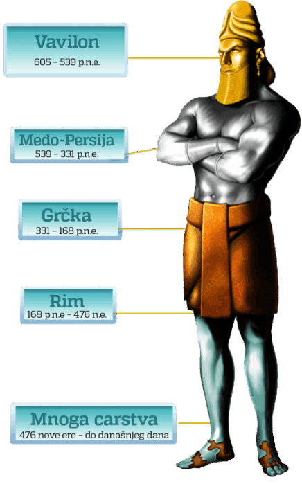

Jakov i Marko bila su dva prijatelja sa veoma različitim verovanjima. Jakov je verovao u Boga kao u Suverenog Cara koji je stvorio sve na svetu. Marko je bio posvećeni ateista koji se rugao religiji i mislio da je čitav svet – uključujući i njega samog – nastao slučajno, kroz neku biološku nezgodu. „Kako znaš da Bog postoji i da Biblija nije samo zbirka bajki”, često je pitao Marko. „Bog postoji zato što tako kaže Biblija i možeš verovati Bibliji jer je ona Božja Reč”, odgovorio bi Jakov. Marko bi se zatim nasmejao zbog ove nelogičnosti i rekao: „To je kao da kažeš, ja sam dobar radnik zato što tako kaže Miloš. Kako možemo verovati Milošu? Jednostavno: Ja ću garantovati za njega”. Ova ustanovljena logika koju je izneo Jakov pogrešna je i neće nikoga ubediti u Božje postojanje ili istinitost Biblije. Ipak, mnogi danas nemaju nikakvo bolje objašnjenje za svoje verovanje u Bibliju. Postoje li opipljivi dokazi koji govore u korist istinitosti Biblije? Da li inteligencija i razum iščezavaju kada ljudi postanu hrišćani?
San
Jedan od načina da ispitamo istinitost Biblije jeste da pogledamo njena proročanstva. Jedna od Božjih tvrdnji jeste da On, kroz Bibliju, može predskazati budućnost (Isaija 46,9.10). Istraživanje istorijskih izveštaja o drevnom Vavilonu u Knjizi proroka Danila pomoći će nam da odgovorimo na pitanje o istinitosti Biblije. Ovde nalazimo cara po imenu Navuhodonosor, vladara o kojem je pisano ne samo u Bibliji već i u drugim istorijskim izveštajima. Jedne noći sanjao je san koji ga je vrlo uznemirio, ali kada se probudio nije se mogao setiti sna. Pozvao je svoje mudrace i naredio im da mu kažu šta je sanjao i tumačenje sna. Njegovi mudraci bili su iznenađeni ovim zahtevom. Rekli su: „Nema čoveka na zemlji koji bi mogao kazati caru to šta ište…” (Danilo 2,10.11). Car se razbesneo i zapovedio da se svi mudraci u Vavilonu ubiju (Danilo 2,12). Ovde na scenu stupa jedan Jevrejin po imenu Danilo. Danilo je odveden u ropstvo u Vavilon kada je još bio tinejdžer. Danilo je verovao u Boga. Kada je službenik carskog dvora, Arioh, ispričao Danilu za dekret, Danilo je otišao caru i zamolio za vreme kako bi mu ispričao san i njegovo značenje. Car je pristao. Danilo je otišao kući i usrdno se molio Bogu za mudrost. Bog je odgovorio na njegove molitve i „objavi se tajna Danilu, u noćnoj utvari” (Danilo 2,19).

Istorija u velikoj statui
Sledećeg jutra Danilo je otišao u carevu prestonu dvoranu i otkrio mu san. Car je video veliku statuu. Bila je sačinjena od pet različitih delova. Glava je bila zlatna, poprsje i ruke od srebra, bedra od bakra, noge od gvožđa, a stopala delimično od gvožđa i delimično od gline. Onda je jedan veliki kamen udario u lik i razbio ga na delove tako da je postao kao pleva koju je odneo vetar (Danilo 2,31-35). Danilo je zatim caru ispričao značenje sna. Zlatna glava predstavljala je Vavilon. Srebro je označavalo Medo-Persiju; bronza je simbolički predstavljala Grčku. Gvozdene noge predstavljale su Rim. Stopala od gvožđa pomešanog sa zemljom predstavljala su podeljenu silu Rima, delimično slabu i delimično jaku. Kako se gvožđe ne meša sa zemljom, ni ove nacije se neće držati čvrsto zajedno. Veliki kamen koji je razlomio kip predstavljao je Božje carstvo: „A u vreme tih careva Bog će nebeski podignuti carstvo koje se do veka neće rasuti, i to se carstvo neće ostaviti drugom narodu; ono će satrti i ukinuti sva ta carstva, a samo će stajati do veka” (Danilo 2,38-44).
Ispunjenje sna
Svaka od ovih predviđanja o carstvima koja su simbolički predstavljena metalima ostvarila su se nepogrešivom preciznošću. Prvo carstvo, Vavilon, vladalo je svetom od 605. do 539. godine pre nove ere. Nacija Miđana i Persijanaca vladala je od 539. do 331. godine pre nove ere. Sledeće carstvo, Grčka, dominirala je od 331. do 168. pre nove ere. Gvozdena sila Rima vladala je od 168. pre nove ere do 476. godine nove ere. Poslednje carstvo, podeljeno u više manjih carstava, predstavlja podeljene sile Rima, savremene evropske narode, koji su danas još uvek razdvojeni. Biblija je besprekorno tačna povodom svih pet carstava i u koje vreme će ona nastati!
Još određenih dokaza
Skeptici su govorili da su Danilova predviđanja lažna, da je njegova knjiga napisana mnogo kasnije u istoriji. Čak i da je to istina, činjenica da Svici s Mrtvog mora sadrže osam rukopisa iz Danila, a najstariji datira iz 125. godine pre nove ere (i kopija je jednog ranijeg izdanja), pokazuje da je ovo proroštvo napisano više stotina godina pre deljenja Rima u nacije savremene Evrope. Ovo proročanstvo je samo jedan od stotinu primera koji može da se navede u dokazivanju nadahnuća Biblije. Još jedan konkretan primer vidi se u proročanstvu iz Knjige proroka Danila, devetog poglavlja, gde je stotinama godina unapred prorečeno tačno vreme Hristovog krštenja i smrti. Zaista, nakon istraživanja istinitih dokaza kao što su ona koja imamo u biblijskim proročanstvima, možemo zaključiti da Bogu i Bibliji možemo u potpunosti verovati! Drugo poglavlje Knjige proroka Danila pokazuje nam koliko su istinita i precizna ova predviđanja, što nam daje temelje za inteligentu veru.
Biblija je nadahnuta Božja
Reč i možemo joj verovati kao priručniku za svaku situaciju.
Ipak, jednostavno verovanje u ove informacije učiniće je samo time„ informacijom. Samo verovanje nema spasonosnu silu u našem životu. Naše verovanje mora da nas menja. Od večne je važnosti da verujemo ne samo u Bibliju, već da joj dozvolimo da nas menja. Biblija kaže da čak i „đavoli veruju, i drhću” (Jakov 2,19). Bog će uzeti naš život i promeniti ga u nešto divno ako Mu dozvolimo. Želite li to?